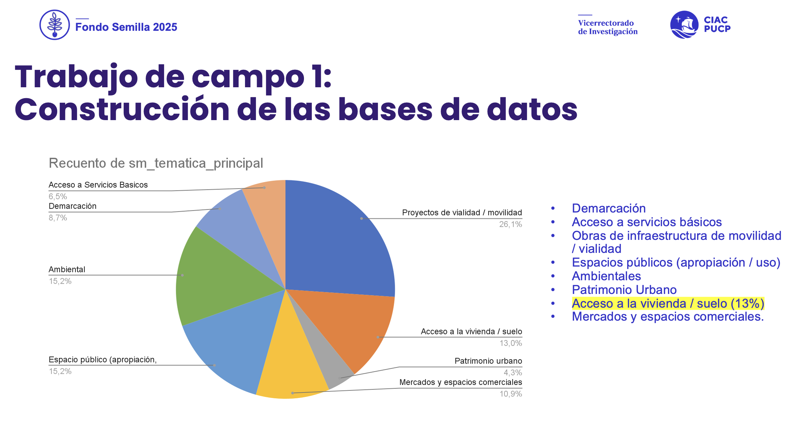
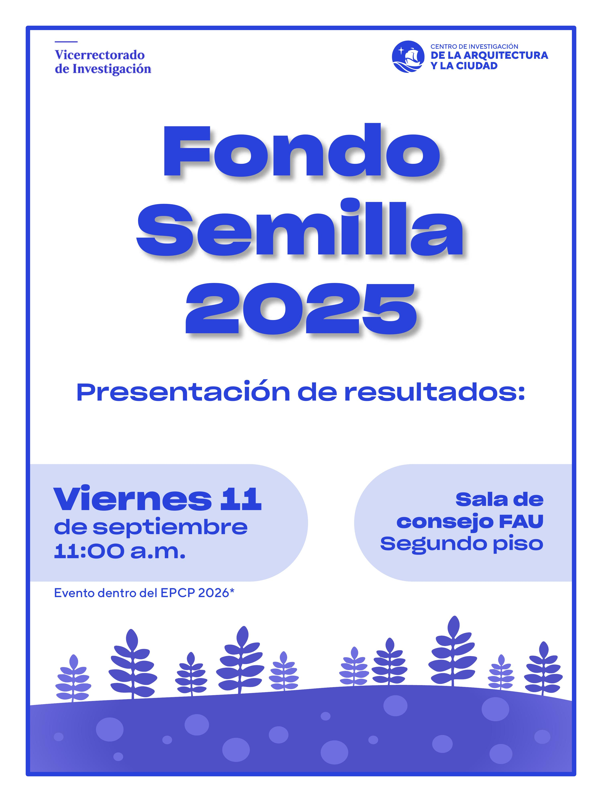

03 de marzo, 2026
Semilla CIAC-PUCP
CONURB-PUCP presentó los avances del Observatorio en el Seminario de Avances de Investigación del Fondo Semilla CIAC 2025-2026.
Leer más →


CONURB-PUCP presentó los avances del Observatorio en el Seminario de Avances de Investigación del Fondo Semilla CIAC 2025-2026.
Leer más →
El equipo compartió los resultados finales del proyecto en el marco del EPCP 2026, junto a otras investigaciones docentes de la FAU-PUCP.
Leer más →